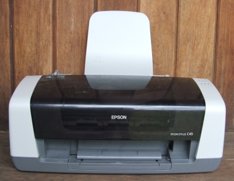

Impressora não imprime
O problema
O documento é enviado para a impressora e nada acontece: o trabalho fica parado na fila de impressão (a lista de documentos aguardando para serem impressos) ou a impressora aparece como offline, mesmo estando ligada.
Possíveis causas
Um documento travado na fila, falha na conexão (cabo USB ou rede Wi-Fi), driver ausente ou o serviço de impressão parado: o Spooler de Impressão no Windows ou o CUPS (Common Unix Printing System, o sistema de impressão do Linux).

Solução no Windows
Confira se a impressora está ligada, com papel, sem mensagem de erro no visor e com o cabo USB conectado; se for de rede, ela precisa estar na mesma rede do computador. Em Configurações > Bluetooth e dispositivos > Impressoras e scanners, abra a fila da impressora e desmarque Usar impressora offline.
Se a fila estiver travada, digite services.msc no Executar (Win + R), pare o serviço Spooler de
Impressão, apague os arquivos da pasta C:\Windows\System32\spool\PRINTERS e inicie o serviço
novamente. Se não resolver, remova a impressora e adicione-a de novo com o driver mais recente do site do
fabricante.
Solução no Linux
Abra Configurações > Impressoras, confira se a impressora aparece e use o menu da impressora para ver e
cancelar os trabalhos. Pelo terminal, lpstat -t mostra o estado das impressoras e da fila, e
cancel -a cancela todos os trabalhos.
Se a fila continuar travada, reinicie o serviço de impressão com sudo systemctl restart cups.
A página http://localhost:631, aberta no navegador, é a interface de administração do CUPS,
onde é possível adicionar a impressora novamente. Muitas impressoras HP precisam do pacote
hplip, e as de outras marcas podem ter driver no site do fabricante.